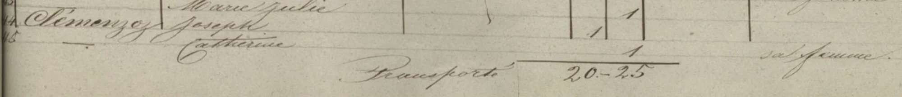

La historia
Catherine Fortunée Cerisier (n. 1786) fue la esposa de Jean Joseph Clemenzo y madre de los seis hermanos Clemenzoz de la generación de François Clemenzoz: Joseph Florentine Clemenzo, François Clemenzoz, Janne Marie Clemenzo, Marie Henriette Clemenzo, Joseph Marie Clemenzo y Marie Elizabet Clemenzo. Los censos del Valais la documentan de corrido entre 1829 y 1850, siempre al frente de un hogar que vivía en [[riddes-valais|Riddes]] pero mantenía su burguesía en [[ardon-valais|Ardon]] («porté à Ardon 1re classe», anota el censo de Riddes de 1829).
El apellido aparece con grafías variables según el documento: «Cerisier» (1829, 1850), «Cérisier» (1837) y «Pirisier» (censo de Ardon) — todas la misma persona.
En 1850 viven con ella «Jeanne» (¿Janne Marie Clemenzo?) y una «Marie Josephine» nacida en 1844 — casi con certeza Josephine Clemenzo, su nieta, hija de François Clemenzoz: un dato relevante para la filiación discutida de Josephine.
Murió en 1851. Diez años después, su testamento se convirtió en el disparador de la ruina familiar: legó sus bienes directamente a los hijos de François Clemenzoz —salteando a su propio hijo—, y la cámara pupilar de [[salins-valais|Salins]] aceptó esa herencia en diciembre de 1861, primer acto de la secuencia que documenta la Gazette du Valais (ver el post «La ruina de François»).
Cronología
| Año | Fuente | Qué dice |
|---|---|---|
| 1786 | censos de Riddes 1829, 1837 y 1850 | Nace (año declarado consistente en los tres registros) |
| 1829 | Censo de Riddes, 2.ª clase | «Clémenzo Cerisier, Catherine Fortunée», en Riddes con su marido Jean Joseph (1780) y los seis hijos; familia «porté à Ardon 1re classe» |
| s/f (¿1829?) | Censo de Ardon | «Pirisier, Catherine Fortunée», laboureuse, encabeza la lista del hogar con los seis hijos; Joseph Florentin estudiante «à Fribourg en Brisgau» |
| 1837 | Censo de Riddes, 1.ª clase (febrero) | «Clémenzo Cérisier, Marie Catherine», sa femme de Jean Joseph; en el hogar quedan Jeanne Marie, Marie Henriette, Élisabeth y François |
| 1846 | Censo de Riddes | «Clémenzoz, Joseph» + «— Catherine, sa femme» — ambos vivos |
| 1850 | Censo de Riddes | «Clemenzoz Cerisier, Marie Catherine», 1786 — hogar sin Jean Joseph; conviven «Jeanne» (n. 1820 sic) y «Marie Josephine» (n. 1844, ¿Josephine Clemenzo?) |
| 1851 | árbol | Muere |
| 1861 | Gazette du Valais / cámara pupilar de Salins | En diciembre se acepta la herencia que legó por testamento a los hijos de François Clemenzoz, salteando a su hijo |
Qué falta / hipótesis
Su testamento salteó a François (François Clemenzoz) para legar a los nietos. ¿Por qué? Para 1851 François ya mostraba señales de dificultades, o la familia quiso proteger el patrimonio de sus deudas. La secuencia 1861-66 de la Gazette sugiere que la precaución era fundada.
Líneas de investigación
- Confirmar la fecha del censo de Ardon (imágenes censo-1/censo-2) en la fuente original (AEV / vallesiana.ch)
- Buscar el acta de defunción de Catherine (1851) en los registros parroquiales de Riddes
- Buscar el testamento original: si la cámara pupilar de Salins lo trató en 1861, puede haber copia en minutas notariales del AEV
- Verificar la identidad de la «Marie Josephine» (n. 1844) del hogar de 1850 — ¿es Josephine Clemenzo?
Fuentes
- Censo de Riddes 1829, 2.ª clase (François Clemenzoz-Jean Joseph Clemenzo-p58-Joseph Florentine Clemenzo-Joseph Marie Clemenzo-Janne Marie Clemenzo-Marie Henriette Clemenzo-Marie Elizabet Clemenzo-1829-riddes-2clase.webp)
- Censo de Ardon, s/f (censo-1.webp, censo-2.webp)
- Censo de Riddes 1837, 1.ª clase (François Clemenzoz-Jean Joseph Clemenzo-p58-Janne Marie Clemenzo-Marie Henriette Clemenzo-Marie Elizabet Clemenzo-1837-riddes-censo.webp)
- Censo de Riddes 1846 (Jean Joseph Clemenzo-p58-1846-riddes.webp)
- Censo de Riddes 1850 (p58-Janne Marie Clemenzo-1850-riddes.webp)
- Gazette du Valais, avisos 1861 (aceptación de herencia, cámara pupilar de Salins) — ver post «La ruina de François»
Documentos


Censos

